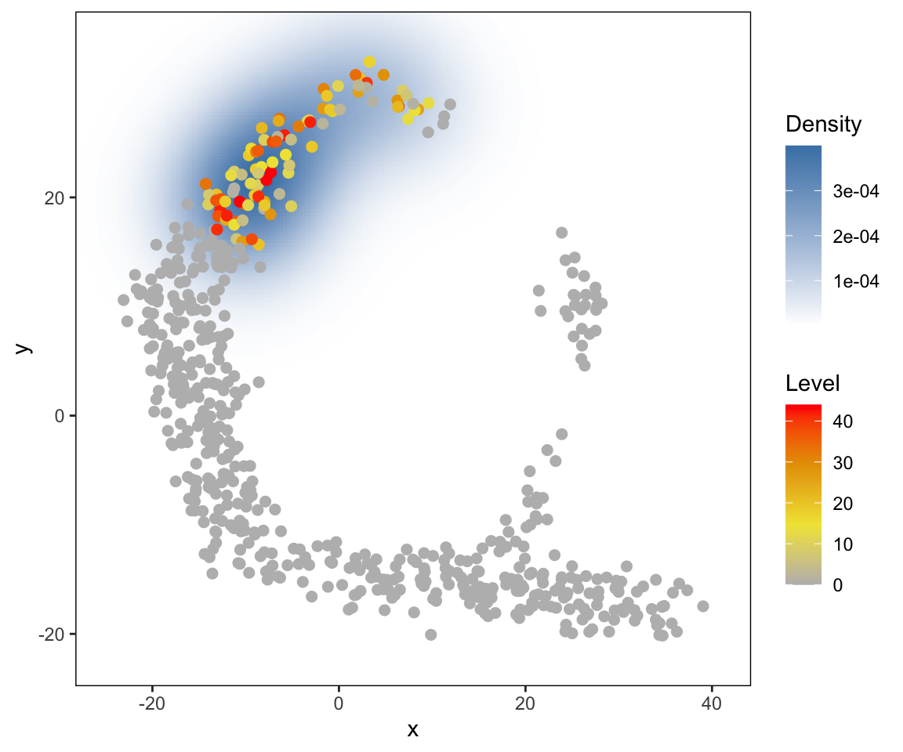
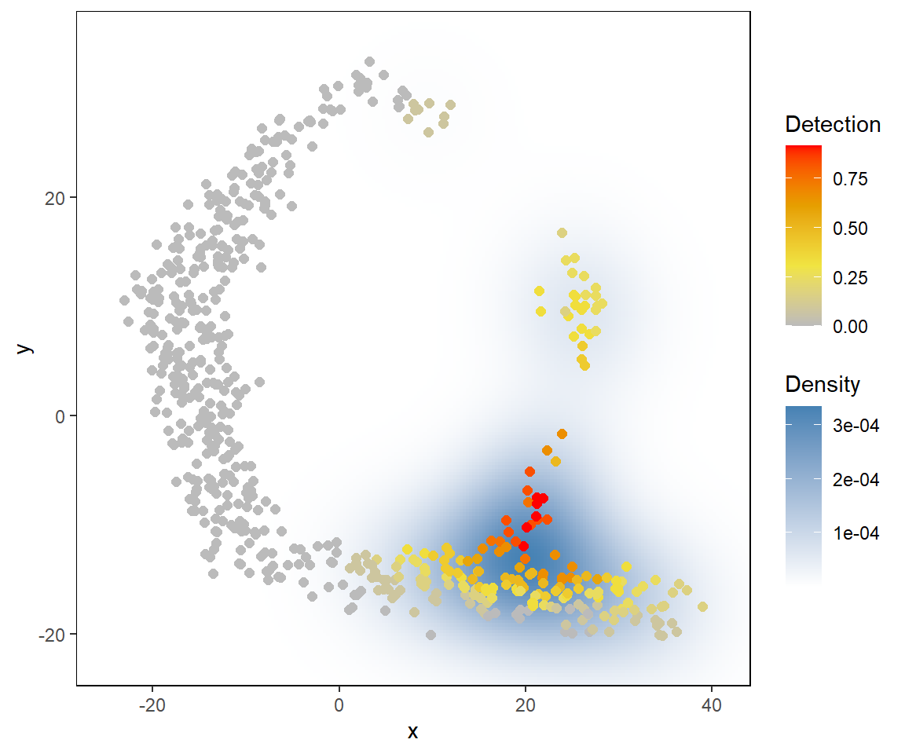

a01_toy_example.RmdA small toy dataset is included in the package. The toy dataset includes:
dat.expression: scRNA-seq expression of genes (rows) in cells (columns)
dat.tsne: a 2D representation of the cell in dat.expression
First, apply haystack (the main function of the package) on the toy dataset. This should take just several seconds on a typical desktop computer.
library(singleCellHaystack) set.seed(1234) # Turn the expression data into detection (gene detected = TRUE, not detected = FALSE) dat.detection <- dat.expression > 1 # run the main 'haystack' analysis res <- haystack(dat.tsne, detection = dat.detection, method = "2D") #> ### calling haystack_2D()... #> ### setting parameters... #> ### calculating Kullback-Leibler divergences... #> ### starting randomizations... #> ### ... 10 values out of 58 done #> ### ... 20 values out of 58 done #> ### ... 30 values out of 58 done #> ### ... 40 values out of 58 done #> ### ... 50 values out of 58 done #> ### estimating p-values... #> ### returning result... # the returned results 'res' is of class 'haystack' class(res) #> [1] "haystack"
Let’s have a look at the “most surprising” genes.
# show top 10 "surprising" genes show_result_haystack(res.haystack = res, n=10) #> D_KL log.p.vals log.p.adj T.counts #> gene_497 1.599646 -25.55327 -22.85430 86 #> gene_79 1.929800 -24.93934 -22.24037 68 #> gene_62 1.519993 -24.68869 -21.98972 81 #> gene_61 1.470475 -24.12825 -21.42928 80 #> gene_339 1.414814 -23.87108 -21.17211 87 #> gene_351 1.408946 -23.62384 -20.92487 89 #> gene_137 1.349994 -23.08019 -20.38122 89 #> gene_444 1.435882 -22.92343 -20.22446 75 #> gene_317 1.386194 -22.38427 -19.68530 94 #> gene_313 1.294544 -22.16986 -19.47089 78 # alternatively: use a p-value threshold #show_result_haystack(res.haystack = res, p.value.threshold = 1e-10)
One of the most non-random genes is “gene_497”. Here we visualize it’s expression in the t-SNE plot.
# visualize one of the surprizing genes plot_gene_haystack( dat.tsne, expression = dat.expression, gene = "gene_497", detection = dat.detection, high.resolution = TRUE, point.size = 2 )

Yes, the pattern of cells in the toy example roughly resembles a haystack; see the Haystack paintings by Monet.
You are not limited to single genes. Here, we pick up a set of non-random genes, and group them by their expression pattern in the plot into 5 clusters.
# get the top most significant genes, and cluster them by their distribution pattern in the 2D plot sorted.table <- show_result_haystack(res.haystack = res, p.value.threshold = 1e-10) gene.subset <- row.names(sorted.table) # k-means clustering km <- kmeans_haystack(dat.tsne, detection=dat.detection, genes=gene.subset, k=5) km.clusters <- km$cluster # alternatively: hierarchical clustering #hc <- hclust_haystack(dat.tsne, detection=dat.detection, genes=gene.subset) #hc.clusters <- cutree(hc,k = 5)
… and visualize the average pattern of the genes in cluster 1 (for example).
# visualize cluster distributions plot_gene_set_haystack(dat.tsne, detection = dat.detection, genes=names(km.clusters[km.clusters==1]), point.size=2)
